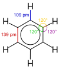

benzene

Definition: Benzene is an organic chemical compound with the molecular formula C6H6. The benzene molecule is composed of six carbon atoms joined in a planar ring with one hydrogen atom attached to each. Because it contains only carbon and hydrogen atoms, benzene is classed as a hydrocarbon.Benzene is a natural constituent of petroleum and is one of the elementary petrochemicals. Due to the cyclic continuous pi bonds between the carbon atoms, benzene is classed as an aromatic hydrocarbon. Benzene is a colorless and highly flammable liquid with a sweet smell, and is partially responsible for the aroma of gasoline. It is used primarily as a precursor to the manufacture of chemicals with more complex structure, such as ethylbenzene and cumene, of which billions of kilograms are produced annually. Although benzene is a major industrial chemical, it finds limited use in consumer items because of its toxicity.
Source: Wikipedia
Wikipedia Page
Wikidata Page
Occurs in: